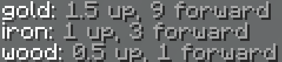

Contact me on discord (JackJack33#6425) if you need to report a bug
or need help with anything else regarding this script.
Additionally, you can join the Cosmos Discord, which is a server
run by myself, fjsu, and Santio71. However please do not send them DM's regarding
this script, it is not their responsibility :)!
Launch pads are super simple. Pick a material (planks, iron, or gold), and place a block down
with a pressure plate of the same material on top. Then, use redstone to power the block below the material block.
Additionally, it's easy to modify the force values applied when you use a launch pad.
Simply run the command /jlp.view to view the current values, and use /jlp.set (wood|iron|gold) (up|forward) (number)
to apply a new value. (Decimal and negative numbers are supported)

Note that these commands both require op to be run